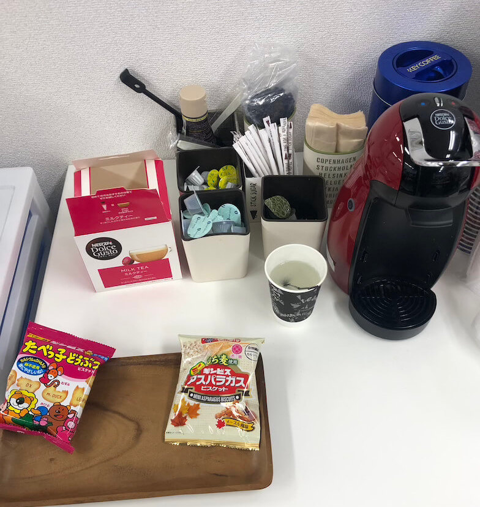
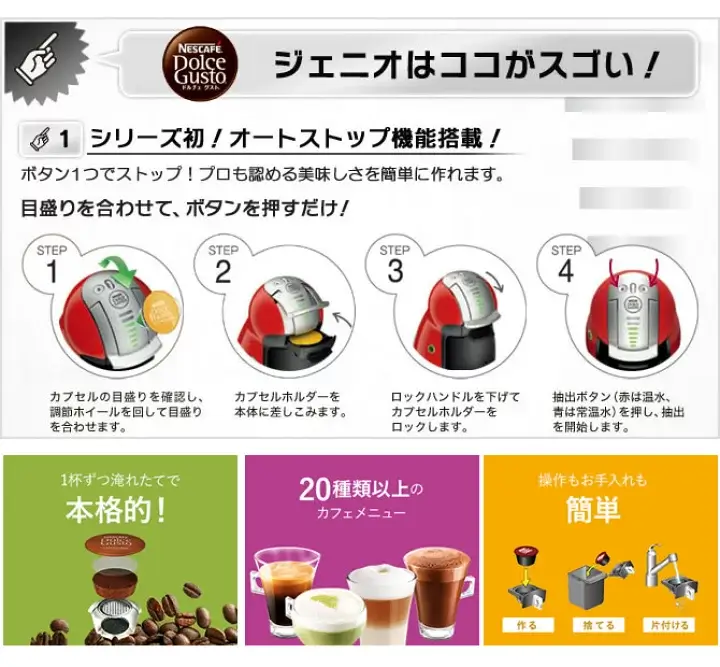
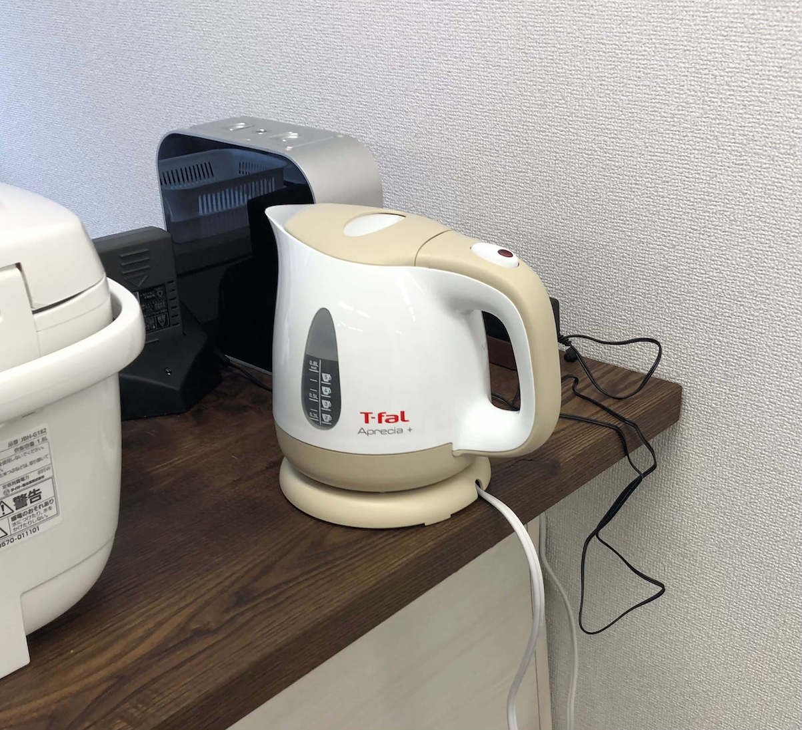
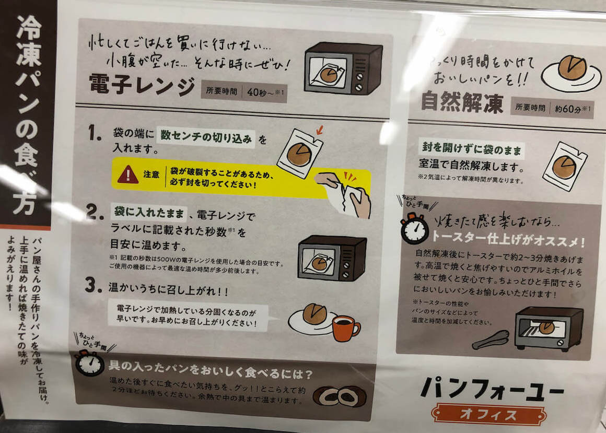

就労移行ITスクール金沢
通所利用について
通所時にすることが知りたいです。
① 入り口で検温とアルコール消毒を行います。
② 次にクリアチェストから自分のファイルを取り、タイムカードを押します。
③ 席についたら、日報「通所時」を記入します。
④ 日報の記入が終わったら、Slackの「金沢_利用者日報」チャンネルに報告します。
⑤ お弁当を利用される方は、お弁当の準備をお願いします。
これで通所時にすることはお終いです。今日も1日、よろしくお願いします。
退所時にすることが知りたいです。
① タイムカードを押します。
② 「サービス提供記録」と「就労移行支援提供実績記録票」に今日やったことを記入します。
③ パソコンの方でも同じように日報【退所時】を記入します。
④ 記入が終わったらSlackの「金沢_利用者日報」チャンネルに報告します。
⑤ クリアファイルをカウンターのところに提出します。
⑥ 掃除当番のトランプカードを引き、引いた数字の担当するところの掃除をお願いします。
これで退所時にすることはお終いです。今日も1日お疲れ様でした。
お弁当の利用方法について教えてください。
【朝の準備】
① 冷凍庫から今日食べるお弁当を選びます。
② ハサミで切り込みを付けてスチームウォーマーに入れます。
③ スチームウォーマーのどこに入れたか分かるように自分のネームプレートを入れた場所のホワイトボードに貼ります。
④ 「お弁当を食べた方」の表に日付と名前を記入します。
⑤ ご飯を食べる方はご飯の項目にも日付と名前を記入します。
【お昼になったら】
① スチームウォーマーからお弁当を取り出して、割り箸と一緒にトレーに乗せます。 （※水滴と熱に注意してください。）
② ホワイトボードから自分のネームプレートを外します。
③ 炊飯器のご飯をもらいにいきます。
カフェの利用方法について教えてください。
カフェはいつでも自由にご利用できます。
【飲み物】
コーヒーメーカー:ネスカフェ、デロンギ
冷蔵庫:お茶、水、紅茶、コーヒー
【その他ご利用いただけるもの】
お菓子、砂糖、ミルク、レモン、チョコレートシロップ
マドラー、紙コップ、フタ
電子レンジ、オーブントースター、ケトル
-

カフェエリア
-

ネスカフェ
-

目盛り
-

デロンギ
-

ケトル
-

パン
在宅利用について
在宅学習を始める時にすることが知りたいです。
① 10:00になったら、Zoomを通じて朝礼を行います。
② 朝礼が終わったら、在宅支援活動管理表と日報【通所時】を記入します。
③ 記入が完了したら、Slackの「金沢_利用者日報」に報告します。
これで在宅学習を始める時にすることはお終いです。今日も1日、よろしくお願いします。
在宅学習を終わる時にすることが知りたいです。
① 15:00になったら、Zoomを通じて夕礼を行います。
② 夕礼が終わったら、在宅支援活動管理表と日報【通所時】に今日おこなったことを記入します。
③ 記入が完了したら、Slackの「金沢_利用者日報」に報告します。
これで在宅学習を終わる時にすることはお終いです。今日も1日、お疲れ様でした。
Zoom（ズーム）の入り方について教えてください
① Slackの# generalというチャンネルに「本日在宅の方はこちらからお願いします」という文章と共に記載されたURLがあるのでクリックして開いて下さい。
② 入ったらビデオの停止となっているので、クリックしてカメラをオンにして顔を映してください。
③ あとは朝礼開始までお待ちください。
④ 朝礼が終わったら、右下の「退出」ボタンをクリックしてZoomから退出してください。
⑤ 夕礼も同じ入り方です。
その他
このサイトって公式じゃないんですか？
スクール利用者が自主的に作ったサイトです。
確認を取りながら作りましたが公式ではありません
Youtubeルームツアー
久保さん(CEO)特別講座
どれくらいのスキルがあれば転職できますか？
転職はいつでもできます。
スキル自体はそこまで重要ではなく、就職に対して求められる一番大切なことは「人間性」です。
面接官に「一緒に働きたい」と思ってもらうことが大切で、どういう自分を見せればイメージがいいか意識して考えてみましょう。
通院や体調不良が原因で就活の不利になることはありますか？
ありません。
時期によって障害者求人が多くなることはありますか？
あります。
4月スタートの企業が多いため、2月中旬〜3月中旬に一番求人が多くなります。
金沢でもEスポーツは予定していますか？
予定しています。
Eスポーツ関連の就職先は増えているので、ITスクール金沢でも今後導入する予定です。
（※Eスポーツ:プロのゲームをする人）
面接官が応募書類などで一番見ているところを教えてください。
志望動機を一番見ています。
企業が人を一人採用するには目安として75~140万くらいかかるので、採用しても内定辞退や早期退職をされると大きな損失です。
なので志望動機を見て採用したあと辞めないかどうかを判断しています。
派遣会社の活用について教えてください。
企業が派遣会社を使う理由には「人材の確保」や「教育やマネジメント管理を派遣先の企業がしてくれる」などがあります。
求職者としては派遣会社を活用することで「入りたい企業に入りやすい」ことがメリットですが、
デメリットとしては「給料が安くなる」「派遣から抜けにくい」ということがあります。
ITスクール金沢はどうして授業ではなく独学スタイルなんですか？
授業スタイルだと個々人のスピードに合わないということと、独学スタイルのほうが質問しやすいためです。
理解できていないことは言語化することができません。
みなさんには質問を文書に起こすことで、「何が起こっているのか・何ができていないのか」という問題を客観的に把握して自分で問題を解決する能力を鍛えていってほしいです。